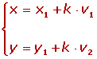

Resumen de Ecuación de la recta II
Resumen de Ecuación de la recta II
- Ecuación vectorial de una recta
- Rectas paralelas
- Mediatriz y Bisectriz
Ecuación vectorial de la recta
Ecuación vectorial de la recta
Ecuaciones paramétricas de la recta

Ecuación continua de la recta
Pendiente
Pendiente dado el ángulo
Pendiente dado el vector director de la recta
Pendiente dados dos puntos

Ecuación punto-pendiente de la recta

Ecuación general de la recta
Ecuación explícita de la recta
Ecuación de la recta que pasa por dos puntos

Rectas paralelas
Rectas paralelas al eje OX
Rectas paralelas al eje OY

Rectas paralelas
Dos rectas son paralelas si tienen el mismo vector director o la misma pendiente.

Rectas perpendiculares
El vector v= (A, B) es perpendicular a la recta r≡ A x .gif+ b y+ C = 0.
Si dos o rectas son perpendiculares tienen sus pendientes inversas y cambiadas de signo.

Posiciones relativas de dos rectas
1 Si , las rectas son secantes, se cortan en un punto.
2 Si , las rectas paralelas, no se cortan en ningún punto.
3 Si , las rectas son coincidentes, todos sus puntos son comunes.
Ángulo que forman dos rectas
Se llama ángulo de dos rectas al menor de los ángulos que forman éstas. Se pueden obtener a partir de:
1 Sus vectores directores

2 Sus pendientes

Distancia de un punto a una recta
Distancia entre rectas
Para hallar la distancia entre dos en rectas paralelas, se toma un punto cualquiera, P, de una de ellas y calcular su distancia a la otra recta.
Mediatriz y Bisectriz
Ecuación de la mediatriz

Ecuaciones de las bisectrices